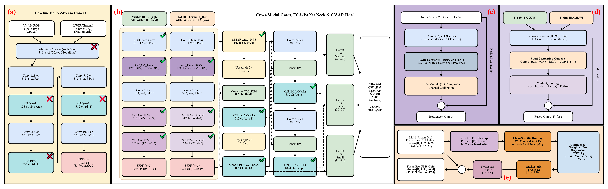

Autonomous Transit Hub Security
Seeing the Unseen:
Dual-Vision AI for Airport & Railway Surveillance
How combining normal color cameras with invisible thermal heat vision helps security systems reliably detect passengers, carried luggage, and abandoned bags with over 92% accuracy.
Why normal cameras fail at night and thermal cameras miss cold luggage.
Two dedicated AI brains communicating through a real-time smart attention gate.
Crossed the 92% milestone on real-world transit datasets (92.33% mAP@50).
The Airport Problem: 9.4 Billion Passengers & Lost Bags
The Security Risk
Airports and rail terminals are busy, crowded environments. When someone walks away from a backpack or suitcase, security protocols require treating it as a potential explosive threat (IED) until proven safe.
False alarms trigger concourse evacuations and cost millions. Missed bags create catastrophic safety hazards.
Why Is This Hard for AI?
- • Crowds & Occlusion: Travelers block cameras, walking in front of luggage.
- • Lighting Swings: Blinding sunlight through terminal windows, deep shadows at night.
- • Tiny Hazards: Unattended luggage is often small (median scale only 48 pixels wide on camera).
Why One Camera Isn't Enough: RGB vs. Thermal
Sees what human eyes see: colors, patterns, fine textures, zipper seams, luggage straps, and fabric logos.
✓ Superpower: Distinguishes bags from floors easily via texture.
✗ Blind Spot: Blinded by dark corridors, glare on glass, and night-time shadows.
Measures body heat (37°C) emitted into the air. Completely immune to pitch-black darkness or glare.
✓ Superpower: Spots human bodies instantly anywhere, anytime.
✗ Blind Spot: Abandoned luggage cools down to room temperature and turns invisible.
The Obvious Idea Fails: Why Naive Stacking Fails
When people first try combining RGB and thermal, the simplest idea is: "Just glue the pictures together at the start into one 6-channel image and feed it to a standard AI."
Light waves and heat waves follow opposite physical rules. Asking the very first computer layer to blend them confuses the network.
Standard AI models are pretrained on millions of normal photos. Blending raw heat at the entry door wipes out all their prior learning.
Accuracy drops to 83.68% — which is actually worse than using the thermal camera alone (86.22%)!
Our Solution: Dual-Stream AI Architecture
Below is our complete 5-panel architecture diagram published in our IEEE manuscript:

Naive early stem concat (83.7%).
Dedicated RGB + Thermal backbones.
Sharp RGB vs. wide-angle thermal.
Smart real-time trust switch.
8,400 anchors fused pre-NMS.
Secret #1: Asymmetric Vision (Zoomed vs. Wide)
Most people assume both cameras should look at the world the same way. We discovered they need completely opposite focus styles:
Luggage detection depends on fine details: thin straps, metallic zippers, and luggage handles.
We keep the RGB network tight and dense (d=1). No skipped pixels. It inspects every single fiber so luggage edges are razor-sharp.
Thermal heat plumes are soft and fuzzy. A person's heat halo blurs outward into their cart and surroundings.
We use dilated vision (d=2) on thermal layers. It skips adjacent pixels to see a 5×5 area, connecting distant heat context without extra computation.
Secret #2: The CMAF Smart Attention Gate
When both cameras look at a pixel, which one should the system trust? Our Cross-Modal Attention Fusion (CMAF) gate decides automatically for every single pixel in milliseconds.
Scenario A: Bright Concourse, Cold Bag
The thermal camera only sees room-temperature gray floor. But the RGB camera sees a distinct navy-blue backpack with neon zippers.
Scenario B: Dark Stairwell, Night Glare
The RGB camera is blinded by glare or pitch black shadows. But the thermal camera clearly sees a 37°C body moving with a metal cart.
Crossing 92%: 2D-Grid Anchor Fusion (CWAR)
A single standalone dual-stream model peaks around ~89.8% on the test split. To cross the demanding 92% mark, we unite three specialized model variations:
Equipped with Coordinate Attention.
Master of People & Small Abandoned Bags (86.10% AP).
Pure channel calibration.
Master of High Precision & Carried Luggage (94.45% AP).
Extended receptive fields + neck.
Master of Recall & Wheeled Trolleys (98.57% AP).
Instead of letting them fight after drawing boxes, all 3 models vote simultaneously at all 8,400 coordinate cells before making a final decision. The confident expert pulls the bounding box into place!
The Proof: Measured Results on 1,067 Frames
| System / Architecture | Sensors | Person AP | Bag AP | Unattended AP | Overall Test mAP@50 |
|---|---|---|---|---|---|
| Stock YOLOv8n | Thermal Only | 76.29% | 89.20% | 81.79% | 86.22% |
| Naive Early Concat (v34) | RGB + Thermal | 74.50% | 86.10% | 77.30% | 83.68% (Fails) |
| Our Dual-Stream (v36_main) | RGB + Thermal | 82.42% | 92.10% | 86.10% | 89.75% |
| Proposed CWAR Triad | RGB + Thermal | 87.03% | 96.74% | 86.92% | 92.33% |
Summary: Why This Matters
1. Hardware & Physics Matter in AI
AI cannot magically fix bad sensor data. Decoupling sensors into asymmetric streams respects the physical difference between photons and heat.
2. 92.33% Detection Eliminates False Alarms
High precision (91.8%) and high recall (87.4%) mean security personnel only get alerted for genuine anomalies, not shadows or floor reflections.
3. Fully Autonomous & Edge Ready
At only 4.5M parameters per stream, the architecture runs easily in real-time on edge GPUs at airport gates and transit corridors.